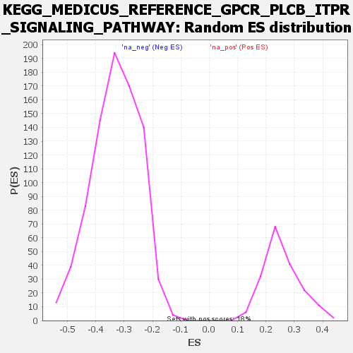

| | | Dataset | all_genes |
| Phenotype | NoPhenotypeAvailable |
| Upregulated in class | na_neg |
| GeneSet | KEGG_MEDICUS_REFERENCE_GPCR_PLCB_ITPR_SIGNALING_PATHWAY |
| Enrichment Score (ES) | -0.6102708 |
| Normalized Enrichment Score (NES) | -1.8493466 |
| Nominal p-value | 0.0 |
| FDR q-value | 0.03772703 |
| FWER p-Value | 0.108 |
Table: GSEA Results Summary
Fig 1: Enrichment plot: KEGG_MEDICUS_REFERENCE_GPCR_PLCB_ITPR_SIGNALING_PATHWAY
Profile of the Running ES Score & Positions of GeneSet Members on the Rank Ordered List
| SYMBOL | RANK IN GENE LIST | RANK METRIC SCORE | RUNNING ES | CORE ENRICHMENT | | 1 | F2R | 1052 | 1.510 | -0.0326 | No |
| 2 | GNAQ | 2308 | 1.053 | -0.0869 | No |
| 3 | CXCR4 | 2411 | 1.029 | -0.0718 | No |
| 4 | ITPR2 | 3382 | 0.807 | -0.1140 | No |
| 5 | GRPR | 3911 | 0.696 | -0.1316 | No |
| 6 | AGTR1 | 7037 | 0.139 | -0.3181 | No |
| 7 | HTR2A | 7346 | 0.084 | -0.3350 | No |
| 8 | CHRM3 | 8112 | -0.057 | -0.3802 | No |
| 9 | GNA14 | 8590 | -0.147 | -0.4061 | No |
| 10 | TACR1 | 9027 | -0.230 | -0.4278 | No |
| 11 | CHRM1 | 9049 | -0.235 | -0.4242 | No |
| 12 | EDNRB | 9642 | -0.362 | -0.4526 | No |
| 13 | OXTR | 10194 | -0.486 | -0.4759 | No |
| 14 | GNA11 | 10425 | -0.542 | -0.4787 | No |
| 15 | HRH1 | 10746 | -0.615 | -0.4854 | No |
| 16 | ADRA1A | 11808 | -0.886 | -0.5314 | No |
| 17 | GRM5 | 12194 | -0.996 | -0.5341 | No |
| 18 | NTSR1 | 13451 | -1.437 | -0.5806 | Yes |
| 19 | ITPR1 | 13491 | -1.456 | -0.5529 | Yes |
| 20 | PLCB3 | 13784 | -1.585 | -0.5379 | Yes |
| 21 | LTB4R2 | 14125 | -1.733 | -0.5227 | Yes |
| 22 | ADRA1D | 14175 | -1.758 | -0.4893 | Yes |
| 23 | AVPR1A | 14402 | -1.861 | -0.4646 | Yes |
| 24 | PTAFR | 14476 | -1.894 | -0.4299 | Yes |
| 25 | PTGER1 | 14676 | -1.994 | -0.4008 | Yes |
| 26 | GRM1 | 14835 | -2.091 | -0.3672 | Yes |
| 27 | TBXA2R | 14931 | -2.155 | -0.3284 | Yes |
| 28 | ITPR3 | 15245 | -2.379 | -0.2982 | Yes |
| 29 | ADRA1B | 15469 | -2.545 | -0.2592 | Yes |
| 30 | BDKRB1 | 15507 | -2.576 | -0.2082 | Yes |
| 31 | EDNRA | 15822 | -2.873 | -0.1679 | Yes |
| 32 | PLCB1 | 15913 | -2.965 | -0.1122 | Yes |
| 33 | PLCB4 | 16124 | -3.367 | -0.0554 | Yes |
| 34 | BDKRB2 | 16296 | -3.878 | 0.0144 | Yes |
Table: GSEA details [plain text format]

Fig 2: KEGG_MEDICUS_REFERENCE_GPCR_PLCB_ITPR_SIGNALING_PATHWAY: Random ES distribution
Gene set null distribution of ES for KEGG_MEDICUS_REFERENCE_GPCR_PLCB_ITPR_SIGNALING_PATHWAY